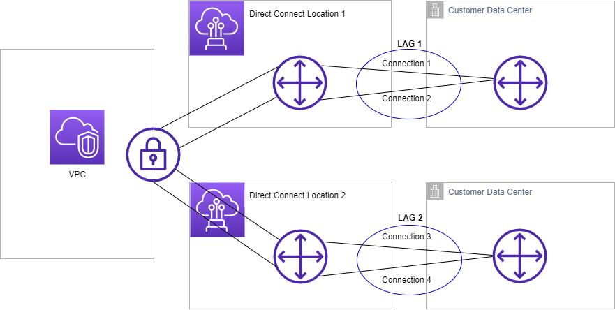

AWS Certified Advanced Networking - Specialty (ANS-C01)
AWS Direct Connect - Link Aggregation Groups (LAGs) Study Guide
Introduction to the Problem
Background:
Organizations need to increase bandwidth between their network and AWS
Managing multiple individual connections can be complex
Need way to treat multiple connections as a single entity
The Solution - Link Aggregation Groups (LAGs):
Logical interface using LACP (Link Aggregation Control Protocol)
Aggregates multiple connections at a single DX endpoint
Treats multiple connections as one managed connection
Simplifies configuration and management
Key Concepts
LAG Components:
Multiple Direct Connect connections
Single AWS Direct Connect endpoint
LACP protocol for aggregation
Active/Active operation mode
Connection Options:
Can create LAG from new connections
Can create LAG from existing connections
Can add standalone connections to existing LAG
Can add connections from other LAGs
Important Limitations
Critical Restrictions:
MLAG (Multi-chassis LAG) is NOT supported
Port availability not guaranteed when creating/expanding LAG
All connections must terminate at same endpoint
Example Scenario:
Four total connections across two locations
Two connections per location
Can create separate LAG for each location
Results in two managed LAGs instead of four separate connections

Figure: Two LAGs instead of the four connections for configuration and management.
Exam Tips
Remember:
LAG simplifies management of multiple connections
All connections must be at same endpoint
MLAG is not supported - important limitation
Can create from new or existing connections
Key Benefits:
Increased bandwidth capability
Simplified configuration management
Single logical interface for multiple connections
Flexible connection management
AWS Direct Connect LAG - Technical Requirements and Specifications
Connection Requirements
Connection Types and Speeds:
Must be dedicated connections only
Supported port speeds:
1 Gbps
10 Gbps
100 Gbps
400 Gbps
All connections in a LAG must use same bandwidth
Connection Limits:
High-speed connections (100 Gbps or 400 Gbps):
Maximum of 2 connections per LAG
Lower-speed connections (< 100 Gbps):
Maximum of 4 connections per LAG
Important: Each LAG connection counts toward regional connection limit
Operational Specifications
Minimum Operational Connections:
Default setting: 0 connections
Can be configured to higher value
If operational connections fall below threshold:
Entire LAG becomes non-operational
Prevents over-utilization of remaining connections
Interface Support:
Supports all virtual interface types:
Public virtual interfaces
Private virtual interfaces
Transit virtual interfaces
All connections operate in Active/Active mode
Administrative Features
Documentation:
LOA-CFA (Letter of Authorization and Connecting Facility Assignment):
Available for download from AWS Direct Connect console
Can be downloaded individually for new physical connections
Management Capabilities:
Single configuration applies to all connections in group
Can modify operational threshold as needed
Flexible connection association and disassociation
Exam Tips
Key Numbers to Remember:
Maximum 2 connections: 100/400 Gbps LAGs
Maximum 4 connections: < 100 Gbps LAGs
Default minimum operational connections: 0
Critical Requirements:
Must be dedicated connections
Same bandwidth across all connections
Same AWS Direct Connect endpoint
Active/Active mode operation
AWS Direct Connect LAG - MACsec Configuration
Introduction to MACsec with LAGs
Background:
MACsec provides layer 2 encryption for Direct Connect
Special considerations needed when using with LAGs
Key management differs from standalone connections
MACsec Key Management Scenarios
Creating LAG from Existing Connections:
Process Flow:
1. All existing MACsec keys are disassociated from connections
2. Connections are added to the LAG
3. LAG's MACsec key is associated with all connections
Adding Connection to Existing LAG:
Process Flow:
1. Existing MACsec keys are removed from the connection
2. Connection is added to the LAG
3. LAG's MACsec key is applied to the connection
Important Considerations
Key Management:
LAG uses single MACsec configuration for all connections
Individual connection MACsec settings are overridden
Changes to LAG MACsec affect all member connections
Operational Impact:
MACsec changes may cause brief encryption interruptions
Plan for key transitions when adding connections
Consider security implications during transitions
Best Practices
Planning:
Prepare MACsec configuration before creating LAG
Document existing MACsec settings before changes
Plan maintenance windows for key transitions
Implementation:
Verify LAG MACsec settings before adding connections
Monitor connection status during transitions
Test encryption after configuration changes
Exam Tips
Key Points:
LAG MACsec configuration overrides individual settings
Existing keys are always disassociated first
Process is same for new and existing connections
Single MACsec configuration per LAG
Process Order:
1. Remove existing MACsec associations
2. Add to LAG
3. Apply LAG MACsec configuration
AWS Direct Connect LAG - Complete Study Guide Summary
Quick Reference Guide
Core LAG Concepts:
Logical grouping of multiple Direct Connect connections
Uses LACP protocol
Managed as single connection
Active/Active operation
❌ MLAG not supported
Key Technical Specifications:
Connection Limits:
2 connections maximum: 100/400 Gbps
4 connections maximum: < 100 Gbps
Requirements:
Dedicated connections only
Same bandwidth across connections
Same AWS Direct Connect endpoint
MACsec Implementation:
Single MACsec configuration per LAG
Overrides individual connection settings
Three-step process for all changes
Critical Features to Remember
Operational Controls:
Minimum operational connections:
Default: 0
Configurable threshold
Prevents over-utilization
Interface Support:
Public virtual interfaces
Private virtual interfaces
Transit virtual interfaces
Common Scenarios and Solutions
Bandwidth Increase:
Add connections to existing LAG
Verify port availability
Consider speed limitations
Security Implementation:
Plan MACsec transitions
Follow three-step process
Verify encryption after changes
High Availability:
Set appropriate operational threshold
Monitor connection health
Plan for potential port limitations
Key Exam Focus Areas
Must-Know Limitations:
No MLAG support
Connection count limits
Bandwidth consistency requirement
Single endpoint requirement
Configuration Knowledge:
LAG creation options
MACsec implementation steps
Operational threshold impact
Virtual interface support
Operational Understanding:
Active/Active mode
Connection management
MACsec key handling
Performance monitoring
Documentation and Management
Key Resources:
LOA-CFA availability
AWS Direct Connect console
Configuration management tools
Best Practices:
Regular monitoring of connection health
Proper documentation of configurations
Planned maintenance windows
Regular security reviews
AWS Direct Connect - Link Aggregation Groups (LAGs) Study Guide
Introduction to LAGs
What is a LAG?
Logical interface using Link Aggregation Control Protocol (LACP)
Aggregates multiple Direct Connect connections
Allows treating multiple connections as a single managed connection
Simplifies configuration management
Important Note: Multi-chassis LAG (MLAG) is not supported by AWS
Key Requirements and Limitations
Connection Requirements:
Must be dedicated connections
Supported speeds: 1 Gbps, 10 Gbps, 100 Gbps, or 400 Gbps
All connections must use same bandwidth
LAG Limits:
Maximum connections:
Two connections for 100 Gbps or 400 Gbps
Four connections for speeds less than 100 Gbps
All connections must terminate at same AWS Direct Connect endpoint
Counts toward Region connection limit
Important Features
Operational Threshold:
Default minimum operational connections: 0
Can be configured to specific value
LAG becomes non-operational if connections fall below threshold
Helps prevent over-utilization of remaining connections
Connection Modes:
All connections operate in Active/Active mode
Supports all virtual interface types:
MACsec Considerations
Creating LAG from Existing Connections:
MACsec keys are disassociated from connections
Connections added to LAG
LAG MACsec key associated with connections
Adding Connection to Existing LAG:
Existing MACsec keys are disassociated
Connection added to LAG
LAG MACsec key associated with connection
Exam Tips
Remember These Points:
MLAG is not supported
All connections must be same speed
Maximum connections vary by speed
Operational threshold is configurable
Active/Active mode operation
Common Scenarios:
Bandwidth increase requirements
High availability configurations
MACsec implementation changes
Implementation Notes
Can create LAG from new or existing connections
LOA-CFA can be downloaded individually for new connections
Port availability not guaranteed when creating or expanding LAG
Consider operational threshold based on bandwidth requirements
Links
Glossary
Networking Terms
Bump in the Wire:
A network architecture design where a device or system is inserted between two existing network devices without altering or interfering with the original network traffic flow. This setup is used for adding network functions like monitoring, filtering, or traffic optimization without modifying the underlying network structure or protocols. It is a transparent insertion, meaning the sender and receiver are unaware of its presence.
North/South Traffic:
Traffic leaving your network or the data center, most commonly describing traffic that is coming from or going to the internet. In AWS, this applies to traffic between VPCs and external networks or the internet. A single VPC or collection of VPCs acts as a virtual data center and network.
East/West Traffic:
Traffic flowing between resources within your data center or network. In AWS context, this refers to traffic flowing between resources within VPCs or between different VPCs in the same network architecture.
AWS Services and Components
Appliance:
A "bump-in-the-wire" function that sits in the network path. These can be firewalls, inline analytics, or other inline functions traditionally referred to as network appliances. In the cloud, these are implemented as virtual appliances (instances or partner solutions accessible via AWS Marketplace).
Gateway Load Balancer (GWLB):
A managed service that facilitates the deployment and management of horizontally scalable inline network virtual appliances in a transparent manner. Used for purposes such as:
Security inspection
Compliance monitoring
Policy controls
Other networking services
Gateway Load Balancer Endpoint (GWLBE):
The data plane component of GWLB that enables flexible placement of interface VPC endpoints in both centralized and distributed deployments. Similar to AWS PrivateLink, it allows service placement across multiple accounts and VPCs while maintaining centralized control and administration.
Cloud & Infrastructure Terms